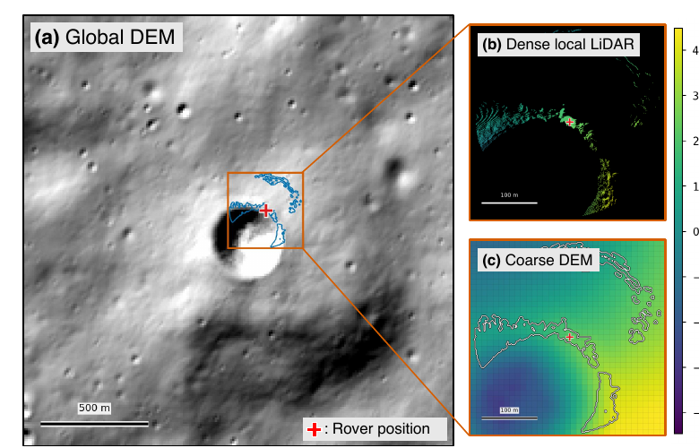
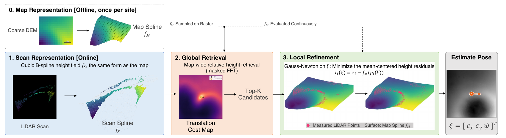
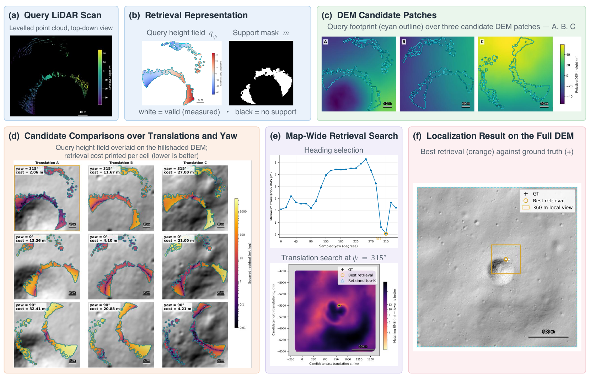
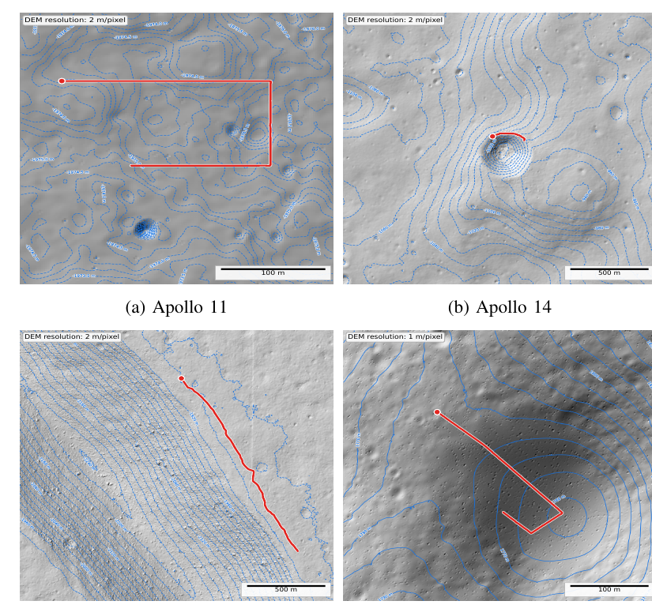
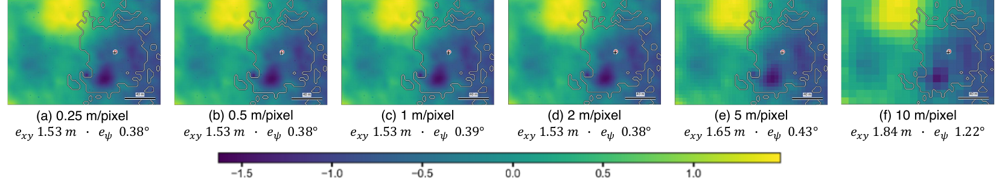
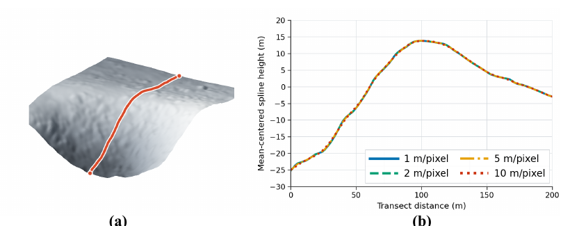

Anonymous ICRA Submission
Under double-anonymous reviewTable I: SplineLoc has the highest SR@5m in every one of the 24 combinations formed by four sites and six reference-map resolutions (0.25, 0.5, 1, 2, 5, and 10 m/pixel). Its median horizontal errors remain in the 1.03-1.86 m range.
At 10 m/pixel, the four-site mean SR@5m is 91.75% for SplineLoc. RING, the strongest evaluated baseline at the two coarsest resolutions, reaches 2.75% at 10 m/pixel. SplineLoc's four-site mean is 94.50% at 5 m/pixel.
Apollo 14 and Apollo 15 use 2000 × 2000 m reference maps. At 10 m/pixel, SplineLoc obtains 96% SR@5m / 1.22 m median on Apollo 14 and 97% / 1.84 m on Apollo 15, without position or heading initialization.
Single-process CPU timings are 1.6 s at Apollo 11, 4.5-5.1 s at Apollo 14/15, and 5.7-5.9 s at Haworth. FFT retrieval takes 0.15-1.24 s; scan fitting dominates the online cost. Offline map fitting is at most 0.22 s in the reported setup.
We present SplineLoc, a single-scan cross-view localization method that matches rover LiDAR against coarse lunar digital elevation models (DEMs) by representing both as continuous cubic B-spline height fields. Existing LiDAR global localization methods typically rely on reference-scan databases, while planetary approaches often require landmarks, temporal accumulation, or bounded initialization, making direct single-scan localization against coarse orbital DEMs challenging.
SplineLoc performs map-wide retrieval with an offset-invariant relative-height objective evaluated through masked Fast Fourier Transform (FFT) correlation, then refines retained candidates directly on measured LiDAR points against the continuous map spline. Experiments use four lunar sites built from real orbital topography, including NASA LROC NAC products, and evaluate DEM resolutions up to 10 m/pixel.

Dense local LiDAR vs. coarse global DEM. The sampling gap motivates a common continuous representation rather than direct dependence on matched scan density.
The method is designed around one constraint: obtain a map-wide global pose fix from a single levelled rover LiDAR scan without a reference-scan database or bounded position initialization.
A coarse orbital DEM and a single LiDAR scan are represented as cubic B-spline height fields, supporting continuous evaluation and analytic map gradients between the source samples.
An offset-invariant, mean-centred height objective decomposes into masked cross-correlations. This turns translation search at sampled headings into a small set of FFT correlations.
Evaluation spans four lunar terrains, six DEM resolutions, a terrain-representation study, and a native orbital-product experiment using LROC NAC DTMs and a shape-from-shading DEM.
SplineLoc estimates planar pose ξ = [cx, cy, ψ]T. Roll and pitch are supplied by an external attitude estimator only for scan levelling.
The georeferenced DEM is fitted once per site with a cubic B-spline height field fM. The map knot spacing is hM = max(4 m, rD), preventing a coefficient grid finer than the source DEM when the reference map becomes coarse.
The levelled LiDAR scan is fitted with a penalized cubic B-spline field fS. Retrieval samples both continuous fields onto a common 4 m lattice, with support restricted to cells near measured LiDAR points.
For each of 24 sampled headings, SplineLoc removes the mean scan-map height offset over valid overlap and evaluates the relative-height mismatch for all translations through masked cross-correlations. The lowest-cost K = 100 translation-heading hypotheses are retained.
Each retained hypothesis is refined in continuous (cx, cy, ψ) using measured LiDAR points directly against fM. Gauss-Newton uses the analytic map gradient and the same mean-centred height-error form; refined candidates are re-ranked by the point-based cost.


The evaluation uses a lunar simulation dataset initialized from real orbital topography. A fixed set of 100 query scans per site is reused across all methods and resolutions.

Weak, low-relief mare terrain. The map is comparable to the LiDAR footprint, testing whether distributed height variation remains sufficient without a prominent landmark.
Crater relief over a large map, providing one of the primary map-wide retrieval settings.
Directional relief near Hadley Rille; also a primary large-scale map-wide retrieval setting.
Extended crater-wall slopes with similar local surface normals; this is the most ambiguous terrain among the four sites.
The chart and table below average SR@5m over the four sites at each resolution. SplineLoc uses the same configuration throughout the sweep; only the map knot spacing follows the DEM when rD exceeds 4 m.
| DEM res. (m/pixel) | DARCES | BEVPlace++ | RING | ICP | SplineLoc |
|---|---|---|---|---|---|
| 0.25 | 9.25% | 45.75% | 54.25% | 0.25% | 94.75% |
| 0.5 | 28.25% | 47.25% | 56.00% | 0.25% | 94.50% |
| 1 | 36.00% | 46.75% | 55.50% | 0.00% | 94.50% |
| 2 | 28.75% | 42.00% | 54.50% | 0.25% | 94.25% |
| 5 | 17.50% | 14.75% | 29.25% | 0.25% | 94.50% |
| 10 | 0.00% | 1.00% | 2.75% | 0.75% | 91.75% |
Mean values above are computed from Table I by averaging the four reported site-level SR@5m values at each resolution. The manuscript's primary comparisons remain the per-site results in Table I.

Two additional studies separate the effect of terrain representation from the main resolution sweep and test whether the result persists when the simulation-derived reference map is replaced by its native orbital product.
With the localization pipeline held fixed, the manuscript compares the B-spline field with bilinear and nearest-neighbor interpolation on Apollo 14 and Apollo 15 (200 pooled queries per condition).

| Representation | 2 m | 5 m | 10 m | 20 m | 50 m |
|---|---|---|---|---|---|
| B-spline | 99.0% | 99.5% | 96.5% | 83.5% | 21.5% |
| Bilinear | 99.5% | 99.5% | 95.5% | 75.5% | 0.5% |
| NN | 99.0% | 99.0% | 91.0% | 56.0% | 0.5% |
At fine resolutions the three representations are similar. Their separation becomes pronounced when the DEM cell size becomes large relative to useful terrain variation.
The resolution sweep uses maps exported from the query-generating simulation terrain. The paper separately replaces these with native LROC NAC DTMs (Apollo) and the native SfS DEM (Haworth), plus area-mean downsampling to 5 and 10 m/pixel.
| Site | Sim.-derived | Native product |
|---|---|---|
| Apollo 11 | 96% | 95% |
| Apollo 14 | 96% | 97% |
| Apollo 15 | 97% | 98% |
| Haworth | 78% | 78% |
The paper interprets the close agreement as evidence that localization is using terrain structure shared across map representations rather than only simulation-specific fine-scale additions.
Reported timings are averaged over eight queries per site in an isolated single-process CPU run on an Intel Core i5-13400F with 64 GB DDR5-5600.
The method targets periodic global fixes rather than per-frame pose estimation, permitting stationary scan acquisition in the evaluated use case.
High-resolution supplementary material accompanying the anonymous submission.
The source-code repository is intentionally not linked to an author- or institution-identifying account during double-anonymous review. The public repository link can be inserted here for the camera-ready version.
% Citation withheld during double-anonymous review.
% Replace this block with the final BibTeX entry after acceptance.